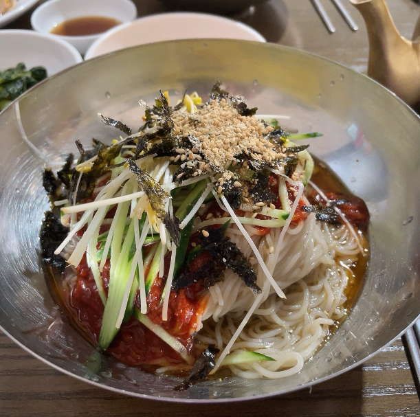
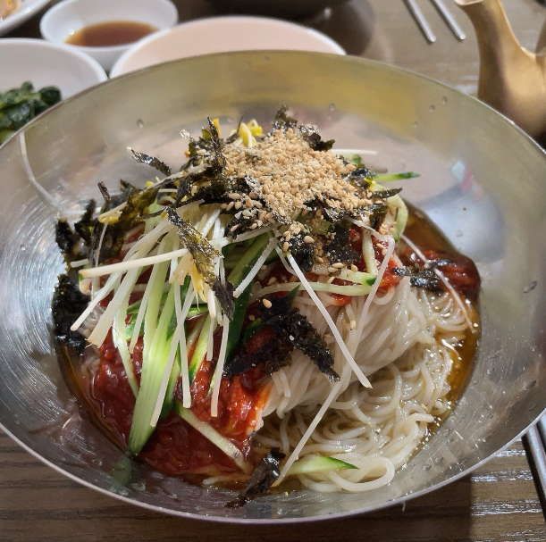

맛집 탐방
제가 최근 푹 빠지게된 음식이 있습니다. 그것은 다름아닌 막국수! 언제부턴가 메밀이 들어간 음식이 좋아지기 시작했고 요즘에는 일주일에 최소 한번은 막국수나 냉모밀을 먹어야만 하는 그런 사람이 되버렸습니다...그러다보니 여행을 다니면서 많은 막국수집을 가보게 되었는데 그중에 몇군데를 소개시켜드리고자 합니다.
가장먼저 '경기 양주시 은현면 평화로1889번길 46-12'에 있는 "용암리 막국수"입니다. 이집은 파주에 친구를 만나러 갈때면 항상 점심메뉴 고정인 집입니다. 이집의 메뉴에는 부지깽이 막국수라는 특이한 메뉴가 있습니다. 들기름 막국수와 비슷하면서도 부지깽이의 독특한 맛을 함께 느낄수 있습니다. 저는 이 집에 부지깽이도 좋지만 정말 좋아하는 메뉴가 있습니다. 물막국수 입니다. 언뜻 보면 어디서든 볼 수 있는 메뉴지만, 이집의 물막국수는 평양식으로 담백한 국물이 일품입니다. 호불호가 있을 수는 있겠지만, 꼭 한번 드셔보시는걸 추천드립니다.
두번째 집은 '강원 평창군 봉평면 이효석길 33-5'에 있는 "메밀꽃향기"입니다. 이집은 막국수에 메밀싹이 들어가 메밀의 향이 진하게 나고 정말 맛있습니다. 이집의 특별 메뉴는 타타리수제묵입니다. 타타리메밀을 우려낸 메밀물에 통메밀을 갈아만든 수제묵으로 텁텁하면서도 부드러운 독특한 식감과 메밀의 향이 진하게 묻어나오는 묵입니다. 메밀을 좋아하신다면 강력추천 드리는 메뉴입니다.
마지막으로 소개드릴집은 다른 두곳에 비해 맛은 떨어지지만, 이 주변을 가실일이 있으시면, 드셔보시길 추천합니다. 마지막 메밀집은 '경기 고양시 덕양구 행주로83번길 3-6'에 있는 "통메밀국수" 입니다. 이곳 역시 메밀싹을 함께 넣어주셔서 메밀 향 자체가 진하게 납니다. 이곳은 특이하게 메밀면을 선택할 수 있는데, 메밀이 얼마나 포함되어있는지에 따라 일반 메밀국수(80%), 순 메밀국수(100%)로 나뉩니다. 메밀을 좋아하시는 분이라면 순 메밀국수 추천드립니다.

 
